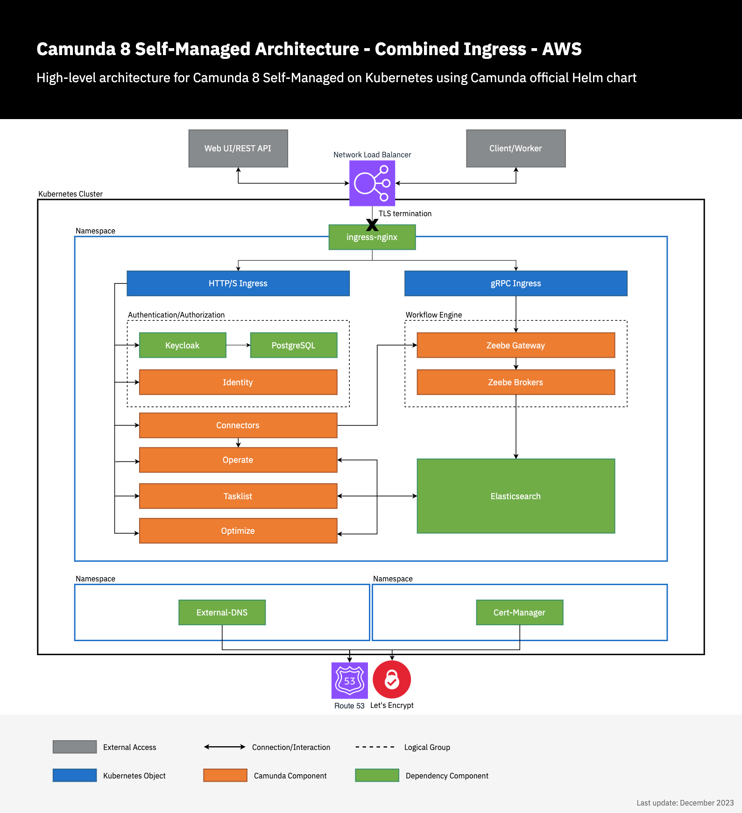

Install Camunda 8 on an EKS cluster
This guide offers a comprehensive guide for installing the Camunda 8 Helm chart on your pre-existing AWS Kubernetes EKS cluster. Additionally, it includes instructions for setting up an optional DNS configuration. Lastly you'll verify that the connection to your Self-Managed Camunda 8 environment is working.
Prerequisites
- A Kubernetes cluster; see the eksctl or Terraform guide.
- Helm (3.16+)
- kubectl (1.30+) to interact with the cluster.
- (optional) Domain name/hosted zone in Route53. This allows you to expose Camunda 8 and connect via zbctl or Camunda Modeler.
Considerations
While this guide is primarily tailored for UNIX systems, it can also be run under Windows by utilizing the Windows Subsystem for Linux.
Multi-tenancy is disabled by default and is not covered further in this guide. If you decide to enable it, you may use the same PostgreSQL instance and add an extra database for multi-tenancy purposes.
Architecture
Note the existing architecture extended by deploying a Network Load Balancer with TLS termination within the ingress below.
Additionally, two components (external-dns and cert-manager) handle requesting the TLS certificate from Let's Encrypt and configuring Route53 to confirm domain ownership and update the DNS records to expose the Camunda 8 deployment.

Usage
In the following, we're using helm upgrade --install as it runs install on initial deployment and upgrades future usage. This may make it easier for future Camunda 8 Helm upgrades or any other component upgrades.
Environment prerequisites
To streamline the execution of the subsequent commands, it is recommended to export multiple environment variables.
The following are the required environment variables with some example values:
# Your standard region that you host AWS resources in
export REGION=eu-central-1
# Following two environment variables can be skipped if you don't have a domain
# The domain name that you intend to use
export DOMAIN_NAME=camunda.example.com
# The e-mail to register with Let's Encrypt
export MAIL=admin@camunda.example.com
# The Ingress-Nginx Helm Chart version
export INGRESS_HELM_CHART_VERSION="4.12.1"
# The External DNS Helm Chart version
export EXTERNAL_DNS_HELM_CHART_VERSION="1.16.0"
# The Cert-Manager Helm Chart version
export CERT_MANAGER_HELM_CHART_VERSION="1.17.1"
# The Camunda 8 Helm Chart version
export CAMUNDA_HELM_CHART_VERSION="10.5.2"
Additionally, follow the guide from either eksctl or Terraform to retrieve the following values, which will be required for subsequent steps:
- EXTERNAL_DNS_IRSA_ARN
- CERT_MANAGER_IRSA_ARN
- DB_HOST
- PG_USERNAME
- PG_PASSWORD
- DEFAULT_DB_NAME
- REGION
DNS set up
If you don't have a domain name, you cannot access Camunda 8 web endpoints from outside the AWS VPC. Therefore, you can skip the DNS set up and continue with deploying Camunda 8.
ingress-nginx
Ingress-nginx is an open-source Kubernetes Ingress controller that provides a way to manage external access to services within a Kubernetes cluster. It acts as a reverse proxy and load balancer, routing incoming traffic to the appropriate services based on rules defined in the Ingress resource.
The following installs ingress-nginx in the ingress-nginx namespace via Helm. For more configuration options, consult the Helm chart.
helm upgrade --install \
ingress-nginx ingress-nginx \
--repo https://kubernetes.github.io/ingress-nginx \
--version $INGRESS_HELM_CHART_VERSION \
--set 'controller.service.annotations.service\.beta\.kubernetes\.io\/aws-load-balancer-backend-protocol=tcp' \
--set 'controller.service.annotations.service\.beta\.kubernetes\.io\/aws-load-balancer-cross-zone-load-balancing-enabled=true' \
--set 'controller.service.annotations.service\.beta\.kubernetes\.io\/aws-load-balancer-type=nlb' \
--namespace ingress-nginx \
--create-namespace
external-dns
External-dns is a Kubernetes add-on that automates the management of DNS records for external resources, such as load balancers or Ingress controllers. It monitors the Kubernetes resources and dynamically updates the DNS provider with the appropriate DNS records.
The following installs external-dns in the external-dns namespace via Helm. For more configuration options, consult the Helm chart.
Consider setting domainFilters via --set to restrict access to certain hosted zones.
If you are already running external-dns in a different cluster, ensure each instance has a unique txtOwnerId for the TXT record. Without unique identifiers, the external-dns instances will conflict and inadvertently delete existing DNS records.
In the example below, it's set to external-dns and should be changed if this identifier is already in use. Consult the documentation to learn more about DNS record ownership.
helm upgrade --install \
external-dns external-dns \
--repo https://kubernetes-sigs.github.io/external-dns/ \
--version $EXTERNAL_DNS_HELM_CHART_VERSION \
--set "env[0].name=AWS_DEFAULT_REGION" \
--set "env[0].value=$REGION" \
--set txtOwnerId=external-dns \
--set policy=sync \
--set "serviceAccount.annotations.eks\.amazonaws\.com\/role-arn=$EXTERNAL_DNS_IRSA_ARN" \
--namespace external-dns \
--create-namespace
cert-manager
Cert-manager is an open-source Kubernetes add-on that automates the management and issuance of TLS certificates. It integrates with various certificate authorities (CAs) and provides a straightforward way to obtain, renew, and manage SSL/TLS certificates for your Kubernetes applications.
To simplify the installation process, it is recommended to install the cert-manager CustomResourceDefinition resources before installing the chart. This separate step allows for easy uninstallation and reinstallation of cert-manager without deleting any custom resources that have been installed.
kubectl apply -f https://github.com/cert-manager/cert-manager/releases/download/v$CERT_MANAGER_HELM_CHART_VERSION/cert-manager.crds.yaml
The following installs cert-manager in the cert-manager namespace via Helm. For more configuration options, consult the Helm chart. The supplied settings also configure cert-manager to ease the certificate creation by setting a default issuer, which allows you to add a single annotation on an ingress to request the relevant certificates.
helm upgrade --install \
cert-manager cert-manager \
--repo https://charts.jetstack.io \
--version $CERT_MANAGER_HELM_CHART_VERSION \
--namespace cert-manager \
--create-namespace \
--set "serviceAccount.annotations.eks\.amazonaws\.com\/role-arn=$CERT_MANAGER_IRSA_ARN" \
--set securityContext.fsGroup=1001 \
--set ingressShim.defaultIssuerName=letsencrypt \
--set ingressShim.defaultIssuerKind=ClusterIssuer \
--set ingressShim.defaultIssuerGroup=cert-manager.io
Create a ClusterIssuer via kubectl to enable cert-manager to request certificates from Let's Encrypt:
cat << EOF | kubectl apply -f -
---
apiVersion: cert-manager.io/v1
kind: ClusterIssuer
metadata:
name: letsencrypt
spec:
acme:
server: https://acme-v02.api.letsencrypt.org/directory
email: $MAIL
privateKeySecretRef:
name: letsencrypt-issuer-account-key
solvers:
- selector: {}
dns01:
route53:
region: $REGION
# Cert-manager will automatically observe the hosted zones
# Cert-manager will automatically make use of the IRSA assigned service account
EOF
Deploy Camunda 8 via Helm charts
For more configuration options, refer to the Helm chart documentation. Additionally, explore our existing resources on the Camunda 8 Helm chart and guides.
With Domain
The following makes use of the combined ingress setup by deploying a single ingress for all HTTP components and a separate ingress for the gRPC endpoint.
Publicly exposing the Zeebe Gateway without authorization enabled can lead to severe security risks. Consider disabling the ingress for the Zeebe Gateway by setting the zeebeGateway.ingress.grpc.enabled and zeebeGateway.ingress.rest.enabled to false.
By default, authorization is enabled to ensure secure access to Zeebe. Typically, only internal components need direct access, making it unnecessary to expose Zeebe externally.
helm upgrade --install \
camunda camunda-platform \
--repo https://helm.camunda.io \
--version $CAMUNDA_HELM_CHART_VERSION \
--namespace camunda \
--create-namespace \
--set identityKeycloak.postgresql.enabled=false \
--set identityKeycloak.externalDatabase.host=$DB_HOST \
--set identityKeycloak.externalDatabase.user=$PG_USERNAME \
--set identityKeycloak.externalDatabase.password=$PG_PASSWORD \
--set identityKeycloak.externalDatabase.database=$DEFAULT_DB_NAME \
--set global.ingress.enabled=true \
--set global.ingress.host=$DOMAIN_NAME \
--set global.ingress.tls.enabled=true \
--set global.ingress.tls.secretName=camunda-c8-tls \
--set-string 'global.ingress.annotations.kubernetes\.io\/tls-acme=true' \
--set global.identity.auth.publicIssuerUrl="https://$DOMAIN_NAME/auth/realms/camunda-platform" \
--set global.identity.auth.operate.redirectUrl="https://$DOMAIN_NAME/operate" \
--set global.identity.auth.tasklist.redirectUrl="https://$DOMAIN_NAME/tasklist" \
--set global.identity.auth.optimize.redirectUrl="https://$DOMAIN_NAME/optimize" \
--set identity.contextPath="/identity" \
--set identity.fullURL="https://$DOMAIN_NAME/identity" \
--set operate.contextPath="/operate" \
--set tasklist.contextPath="/tasklist" \
--set optimize.contextPath="/optimize" \
--set zeebeGateway.ingress.grpc.enabled=true \
--set zeebeGateway.ingress.grpc.host=zeebe.$DOMAIN_NAME \
--set zeebeGateway.ingress.grpc.tls.enabled=true \
--set zeebeGateway.ingress.grpc.tls.secretName=zeebe-c8-tls-grpc \
--set-string 'zeebeGateway.ingress.grpc.annotations.kubernetes\.io\/tls-acme=true' \
--set zeebeGateway.contextPath="/zeebe"
The annotation kubernetes.io/tls-acme=true is interpreted by cert-manager and automatically results in the creation of the required certificate request, easing the setup.
Without Domain
helm upgrade --install \
camunda camunda-platform \
--repo https://helm.camunda.io \
--version $CAMUNDA_HELM_CHART_VERSION \
--namespace camunda \
--create-namespace \
--set identityKeycloak.postgresql.enabled=false \
--set identityKeycloak.externalDatabase.host=$DB_HOST \
--set identityKeycloak.externalDatabase.user=$PG_USERNAME \
--set identityKeycloak.externalDatabase.password=$PG_PASSWORD \
--set identityKeycloak.externalDatabase.database=$DEFAULT_DB_NAME
Verify connectivity to Camunda 8
First, we need an OAuth client to be able to connect to the Camunda 8 cluster.
This can be done by following the Identity getting started guide followed by the incorporating applications documentation.
Instead of creating a confidential application, a machine-to-machine (M2M) application is required to be created.
This reveals a client-id and client-secret that can be used to connect to the Camunda 8 cluster.
zbctl
After following the installation instructions in the zbctl docs, we can configure the required connectivity to check that the Zeebe cluster is reachable.
Modeler
With Domain
Export the following environment variables:
export ZEEBE_ADDRESS=zeebe.$DOMAIN_NAME:443
export ZEEBE_CLIENT_ID='client-id' # retrieve the value from the identity page of your created m2m application
export ZEEBE_CLIENT_SECRET='client-secret' # retrieve the value from the identity page of your created m2m application
export ZEEBE_AUTHORIZATION_SERVER_URL=https://$DOMAIN_NAME/auth/realms/camunda-platform/protocol/openid-connect/token
export ZEEBE_TOKEN_AUDIENCE='zeebe-api'
export ZEEBE_TOKEN_SCOPE='camunda-identity'
Without Domain
This requires to port-forward the Zeebe Gateway and Keycloak to be able to connect to the cluster.
kubectl port-forward services/camunda-zeebe-gateway 26500:26500
kubectl port-forward services/camunda-keycloak 18080:80
Export the following environment variables:
export ZEEBE_ADDRESS=localhost:26500
export ZEEBE_CLIENT_ID='client-id' # retrieve the value from the identity page of your created m2m application
export ZEEBE_CLIENT_SECRET='client-secret' # retrieve the value from the identity page of your created m2m application
export ZEEBE_AUTHORIZATION_SERVER_URL=http://localhost:18080/auth/realms/camunda-platform/protocol/openid-connect/token
export ZEEBE_TOKEN_AUDIENCE='zeebe-api'
export ZEEBE_TOKEN_SCOPE='camunda-identity'
Executing the following command will result in a successful connection to the Zeebe cluster...
zbctl status
# or in the case of port-forwarding (without domain)
zbctl status --insecure
...and results in the following output:
Cluster size: 3
Partitions count: 3
Replication factor: 3
Gateway version: 8.5.z
Brokers:
Broker 0 - camunda-zeebe-0.camunda-zeebe.camunda.svc:26501
Version: 8.5.z
Partition 1 : Follower, Healthy
Partition 2 : Follower, Healthy
Partition 3 : Follower, Healthy
Broker 1 - camunda-zeebe-1.camunda-zeebe.camunda.svc:26501
Version: 8.5.z
Partition 1 : Leader, Healthy
Partition 2 : Leader, Healthy
Partition 3 : Follower, Healthy
Broker 2 - camunda-zeebe-2.camunda-zeebe.camunda.svc:26501
Version: 8.5.z
Partition 1 : Follower, Healthy
Partition 2 : Follower, Healthy
Partition 3 : Leader, Healthy
For more advanced topics, like deploying a process or registering a worker, consult the zbctl docs.
If you want to access the other services and their UI, you can port-forward those as well:
Identity:
> kubectl port-forward svc/camunda-identity 8080:80
Operate:
> kubectl port-forward svc/camunda-operate 8081:80
Tasklist:
> kubectl port-forward svc/camunda-tasklist 8082:80
Optimize:
> kubectl port-forward svc/camunda-optimize 8083:80
Connectors:
> kubectl port-forward svc/camunda-connectors 8088:8080
Keycloak must be port-forwarded at all times as it is required to authenticate.
kubectl port-forward services/camunda-keycloak 18080:80
Follow our existing Modeler guide on deploying a diagram. Below are the helper values required to be filled in Modeler:
With Domain
The following values are required for the OAuth authentication:
# Make sure to manually replace #DOMAIN_NAME with your actual domain since Modeler can't access the shell context
Cluster endpoint=https://zeebe.$DOMAIN_NAME
Client ID='client-id' # retrieve the value from the identity page of your created m2m application
Client Secret='client-secret' # retrieve the value from the identity page of your created m2m application
OAuth Token URL=https://$DOMAIN_NAME/auth/realms/camunda-platform/protocol/openid-connect/token
Audience=zeebe-api # the default for Camunda 8 Self-Managed
Without Domain
This requires to port-forward the Zeebe Gateway and Keycloak to be able to connect to the cluster.
kubectl port-forward services/camunda-zeebe-gateway 26500:26500
kubectl port-forward services/camunda-keycloak 18080:80
The following values are required for the OAuth authentication:
# Make sure to manually replace #DOMAIN_NAME with your actual domain since Modeler can't access the shell context
Cluster endpoint=http://localhost:26500
Client ID='client-id' # retrieve the value from the identity page of your created m2m application
Client Secret='client-secret' # retrieve the value from the identity page of your created m2m application
OAuth Token URL=http://localhost:18080/auth/realms/camunda-platform/protocol/openid-connect/token
Audience=zeebe-api # the default for Camunda 8 Self-Managed
If you want to access the other services and their UI, you can port-forward those as well:
Identity:
> kubectl port-forward svc/camunda-identity 8080:80
Operate:
> kubectl port-forward svc/camunda-operate 8081:80
Tasklist:
> kubectl port-forward svc/camunda-tasklist 8082:80
Optimize:
> kubectl port-forward svc/camunda-optimize 8083:80
Connectors:
> kubectl port-forward svc/camunda-connectors 8088:8080
Keycloak must be port-forwarded at all times as it is required to authenticate.
kubectl port-forward services/camunda-keycloak 18080:80
Testing installation with payment example application
To test your installation with the deployment of a sample application, refer to the installing payment example guide.
Advanced topics
The following are some advanced configuration topics to consider for your cluster:
To get more familiar with our product stack, visit the following topics: